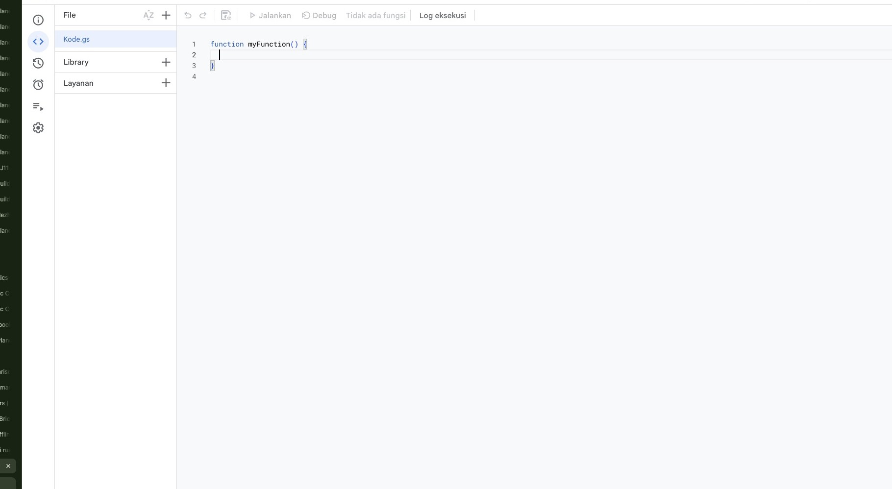
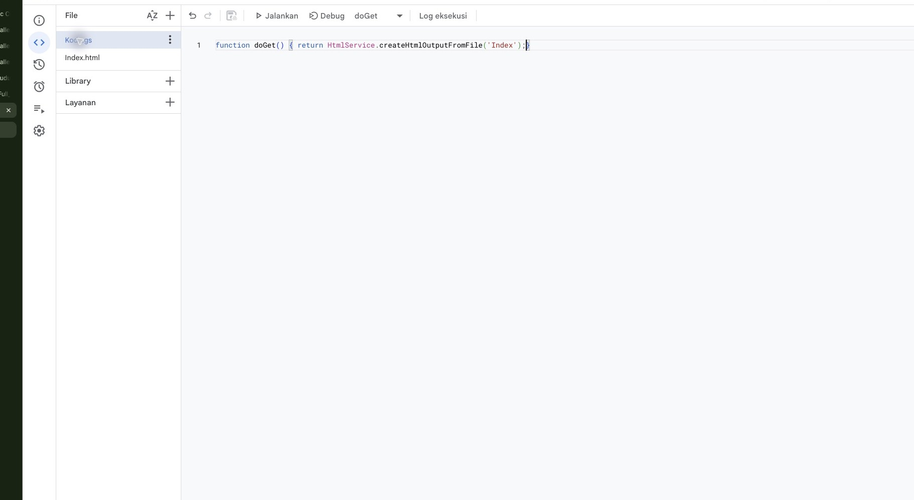
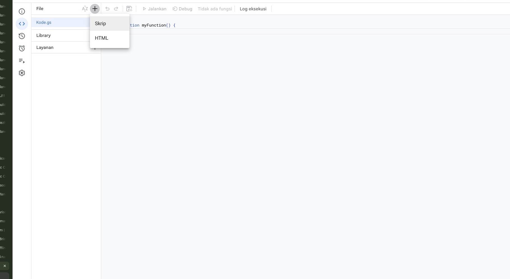
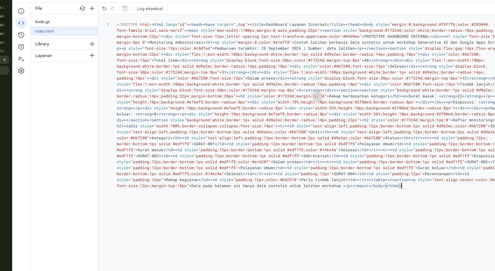
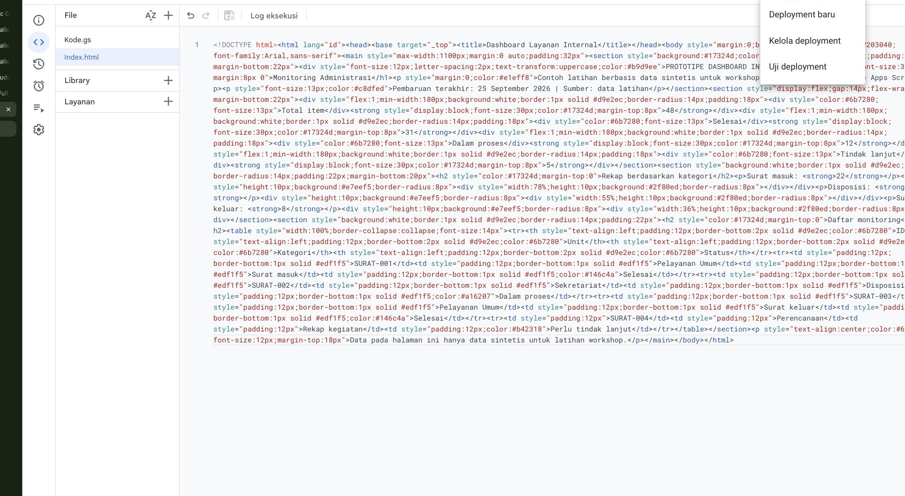

Dari ChatGPT ke Dashboard Internal
Belajar memakai Generative AI melalui chat, menyusun dua file Google Apps Script, lalu menguji prototipe dashboard dengan data sintetis.
return HtmlService
.createHtmlOutputFromFile('Index');
}
<h1>Ringkasan Surat</h1>
<script>loadData()</script>
Hasil yang dibawa pulang
Setiap peserta memahami satu alur utuh dari masalah kerja sampai prototipe yang dapat diuji.
Satu prototipe kecil yang bisa dijelaskan cara kerjanya.
- Memahami AI dan Generative AI dalam pekerjaan administrasi
- Menulis prompt yang memberi konteks, batasan, dan format output
- Membedakan fungsi `Code.gs` dan `Index.html`
- Menguji, membaca error, dan memperbaiki perubahan kecil
- Mengetahui jalur deployment dan risiko akses data
Masalah kerja yang ingin dibantu
Dashboard dimulai dari pertanyaan kerja yang berulang, bukan dari keinginan memakai teknologi baru.
Pertanyaan pembuka
Pekerjaan apa yang paling sering membutuhkan rekap atau pengecekan berulang?
Batasan
Dashboard membantu melihat pola dan status. Keputusan administratif tetap berada pada petugas yang berwenang.
AI dan Generative AI
Mulai dari perbedaan sederhana yang dekat dengan pekerjaan peserta.
- AI
- Teknologi yang membantu komputer mengenali pola, mengikuti aturan, membuat prediksi, atau membantu analisis.
- Generative AI
- AI yang menghasilkan teks, ide, ringkasan, gambar, atau kode berdasarkan instruksi dan konteks yang diberikan.
- Dalam kerja
- AI dapat membantu membuat draf surat, meringkas catatan, menyusun pertanyaan survei, dan membuat prototipe kode.
Manusia tetap memegang kendali
Keluaran AI bisa terlihat meyakinkan dan tetap keliru.
Manusia memeriksa, memperbaiki, lalu mengambil keputusan.
- Periksa apakah AI memahami istilah dan alur kerja lokal
- Periksa angka, nama kolom, status, dan tanggal
- Periksa apakah kode mengikuti struktur data yang nyata
- Periksa apakah tampilan membocorkan data terlalu rinci
- Simpan catatan perubahan agar mudah ditelusuri
Peran peserta
Menjelaskan kebutuhan, mencoba hasil, memberi koreksi, dan memutuskan kapan prototipe layak digunakan.
Peran AI
Membantu menyusun ide, kode, penjelasan, dan alternatif perbaikan. AI tidak menggantikan tanggung jawab pemilik proses.
Data aman untuk latihan
Workshop menggunakan data sintetis. Data nyata hanya digunakan setelah ada dasar dan pengaturan akses yang tepat.
Gunakan
- Data sintetis dan angka agregat
- Nama samaran seperti Warga A atau Unit B
- Kolom yang sudah dianonimkan
- Contoh kasus yang tidak merujuk individu nyata
Jangan tempel ke AI publik
- NIK, nomor kontak, dan alamat lengkap
- Isi surat, aduan, atau dokumen rahasia
- Password, token, dan kredensial
- Data mentah tanpa izin pemrosesan
ChatGPT sebagai ruang kerja berbasis chat
Percakapan yang baik membuat AI memahami masalah sebelum menulis kode.
ChatGPT, Codex, dan Google Apps Script
Tiga nama ini punya peran berbeda dalam satu alur kerja.
| Alat | Cara bekerja | Peran di workshop |
|---|---|---|
| ChatGPT melalui chat | Peserta menjelaskan kebutuhan dan berdiskusi dengan AI. | Alat utama praktik: merancang dashboard, meminta dua file, menjelaskan kode, dan memperbaiki error. |
| Codex | Agen coding membantu mengerjakan file atau project secara langsung. | Pengenalan lanjutan: relevan ketika peserta sudah memiliki folder proyek dan alur coding yang lebih matang. |
| Google Apps Script | Tempat kode ditempel, dijalankan, dan dipublikasikan. | Lingkungan eksekusi: menghubungkan Google Sheets dengan halaman web. |
Apa itu Google Apps Script
Lingkungan berbasis JavaScript untuk mengotomatisasi dan memperluas Google Workspace.
Google Sheets
Data latihan tersimpan dalam baris dan kolom yang dapat dibaca oleh Apps Script.
Apps Script
Fungsi server membaca data, menghitung ringkasan, dan menyajikan halaman.
HTML dashboard
Halaman browser menampilkan kartu, tabel, filter, dan status pembaruan.
Jalur paling mudah
Buka Google Sheet latihan → Extensions → Apps Script.
Jalur alternatif
Google Drive → New → More → Google Apps Script, atau buka `script.google.com`.
Membuka Apps Script dari browser
Untuk latihan, mulai dari spreadsheet yang sudah berisi data sintetis.
Mulai dari sumber data
Buka Google Sheet latihan. Pilih menu Extensions → Apps Script.
- Pastikan memakai akun Google yang benar
- Jangan memakai file berisi data warga nyata
- Gunakan satu project per kelompok

Dua file dalam satu cerita
ChatGPT memberi dua potongan kode. Peserta menaruhnya ke dua file yang berbeda di Apps Script.
function doGet() { return HtmlService .createHtmlOutputFromFile('Index'); } // membaca Sheet dan menyiapkan data
Berisi fungsi Apps Script, termasuk `doGet()` untuk menyajikan halaman web.
<main> <h1>Dashboard</h1> <table>...</table> </main> <script> // filter dan render tabel </script>
Berisi HTML, CSS, dan JavaScript browser dalam satu file pemula.
JavaScript dan CSS berada di `Index.html`
Untuk pemula, dua file sudah cukup. File tambahan baru dikenalkan ketika struktur dasar sudah dipahami.
HTML
Menentukan struktur judul, kartu ringkasan, tabel, dan kontrol filter.
<h1>Ringkasan</h1>
CSS
Mengatur jarak, warna, ukuran teks, dan tampilan agar mudah dibaca.
<style> .card { color: teal; } </style>
JavaScript
Mengambil data, memfilter baris, dan memperbarui isi halaman.
<script> loadData(); </script>
Formula prompt untuk GAS
Gunakan konteks yang cukup. Minta output yang jelas dan mudah ditempelkan.
Prompt dua file yang siap dipakai
Prompt berikut dapat disalin peserta lalu disesuaikan dengan kasus kelompok.
Bertindak sebagai mentor Google Apps Script untuk pemula.
Saya ingin membuat prototipe dashboard internal menggunakan Google Sheets dan
Google Apps Script. Gunakan data sintetis dengan kolom: tanggal, unit, kategori,
status, dan jumlah.
Buat solusi paling sederhana dengan dua file:
1. Code.gs atau Kode.gs: fungsi doGet() untuk membuka Index.html dan fungsi
getDashboardData() untuk membaca data dari Sheet aktif.
2. Index.html: HTML untuk judul, tiga kartu ringkasan, tabel, satu filter, CSS,
dan JavaScript browser di dalam tag <script>.
Tampilkan jawaban dalam dua blok kode terpisah dengan label CODE.GS dan INDEX.HTML.
Setelah kode, berikan langkah penempatan ke Apps Script, cara menjalankan, dan
checklist pengujian. Jangan memakai data pribadi, API key, password, atau token.
Output ChatGPT harus terpisah
Dua blok kode berarti dua tempat penempelan di Apps Script.
function doGet() { return HtmlService .createHtmlOutputFromFile('Index'); } function getDashboardData() { // baca data latihan dari Sheet return { total: 48, selesai: 31 }; }
<!doctype html> <html> <head> <style>...</style> </head> <body> <main>Dashboard</main> <script>...</script> </body> </html>
Masukkan Code.gs
Pilih file `.gs` yang tersedia. Ganti contoh kode dengan blok CODE.GS dari ChatGPT.
- Cek fungsi `doGet()`
- Cek nama file `Index` yang dipanggil
- Simpan project sebelum pindah langkah

Tambahkan `Index.html`
Pilih Add a file → HTML. Beri nama file Index, bukan `Index.html.html`.
- Apps Script menambahkan ekstensi HTML otomatis
- Tempel blok INDEX.HTML dari ChatGPT
- Pastikan file HTML dan file `.gs` berada dalam project yang sama

Jangan buru-buru menambah fitur
Setelah kode ditempel, simpan lalu periksa struktur dasar halaman sebelum mencoba filter atau grafik.
- File `.gs` berisi fungsi server
- File HTML berisi markup, CSS, dan JavaScript browser
- Nama file pada `doGet()` sama dengan nama HTML
- Data latihan tampil dengan angka yang masuk akal

Menguji dan membaca error
Error adalah bagian dari proses. Kirim konteks lengkap ke ChatGPT, bukan hanya kata “error”.
Checklist awal
- Nama fungsi dan nama file sama persis
- Nama Sheet dan nama kolom benar
- Tag `<script>` dan kurung kode lengkap
- Data uji memakai format tanggal yang konsisten
- Browser dan Apps Script memakai akun yang tepat
Saya mendapat error berikut saat menjalankan web app: [tempel pesan error lengkap] Fungsi terakhir: getDashboardData() Tindakan sebelum error: klik tombol Muat data Struktur Sheet: tanggal, unit, status, jumlah Analisis penyebab paling mungkin. Berikan perbaikan sekecil mungkin dan tiga langkah pengujian.
Deployment sebagai web app
Deployment membuat versi project dapat dibuka melalui URL dengan pengaturan akses tertentu.
Deploy → New deployment
Pilih tipe Web app, tentukan siapa yang menjalankan aplikasi dan siapa yang boleh mengakses, lalu catat URL yang muncul.
- Uji memakai data sintetis
- Jangan memilih akses publik tanpa keputusan tim
- Periksa akun eksekusi dan hak akses Sheet
- Jika kode berubah, buat versi deployment yang diperbarui

Arsitektur dashboard minimum
Satu halaman, satu sumber data, dan fitur yang cukup untuk menjawab pertanyaan kerja.
Sheet latihan
Data sintetis dengan kolom yang disepakati kelompok.
Code.gs
Membaca baris, menghitung ringkasan, dan mengirim data ke halaman.
Index.html
Kartu, filter, tabel, grafik sederhana, dan tanggal pembaruan.
Tiga kasus praktik kelompok
Semua kelompok memakai data sintetis. Bedanya ada pada pertanyaan kerja dan indikatornya.
Surat masuk dan disposisi
Melihat surat mana yang selesai, diproses, atau mendekati tenggat.
Kolom minimum- tanggal, unit, jenis surat
- prioritas, status, tenggat
Agenda kegiatan internal
Melihat agenda mendatang dan kesiapan setiap kegiatan.
Kolom minimum- kegiatan, tanggal, unit
- status persiapan, peserta rencana
Rekap layanan atau aduan
Melihat kategori dan status tindak lanjut secara agregat.
Kolom minimum- tanggal, kategori, wilayah umum
- kanal, status, unit penanggung jawab
Canvas kerja kelompok
Sebelum meminta kode, tulis jawaban singkat untuk lima hal ini.
Prompt kelompok
“Bantu kami merancang dashboard untuk menjawab pertanyaan kerja ini: …”
Lanjutkan dengan kolom data, fitur minimum, data sintetis, dan format output dua file.
Rubrik dashboard minimum
Gunakan standar yang sama untuk tiga kelompok agar demo akhir fokus pada pembelajaran.
Rancangan alur workshop
Rujukan 120 menit. Tim dapat memperluas praktik menjadi 150 menit jika pendampingan kelompok membutuhkan waktu.
Orientasi
Tujuan, masalah kerja, dan aturan data aman.
Basic AI
Generative AI, prompting, dan verifikasi manusia.
Demo GAS
Sheet, dua file, copy-paste, dan struktur project.
Praktik
Tiga kelompok membangun versi minimum dan menguji.
Share-out
Demo singkat, pelajaran, dan langkah aman berikutnya.
Presentasi hasil kelompok
Tiga menit per kelompok cukup untuk menunjukkan proses dan pembelajaran.
Checklist sebelum maju
- Link atau file dapat dibuka
- Data yang tampil sintetis
- Fungsi utama dijelaskan
- Error atau keterbatasan dicatat
- Prompt disimpan sebagai bagian dari proses
Sumber teknis dan provenance
Gunakan sumber resmi untuk mengecek detail yang dapat berubah, terutama struktur project dan pengaturan deployment.
Google Apps Script
- Script projects
developers.google.com/apps-script/guides/projects - HTML Service
developers.google.com/apps-script/guides/html - Web apps
developers.google.com/apps-script/guides/web
Catatan deck
- Capture pada langkah praktik berasal dari browser nyata dengan zoom 110%.
- Crop hanya mengurangi chrome browser periferal; UI Apps Script tidak digambar ulang.
- Menu deployment ditampilkan sebagai panduan, bukan klaim URL deployment telah berhasil.
- Semua angka dan contoh pada workshop bersifat sintetis.
Masalah kerja → prompt yang jelas → dua file → uji → keputusan yang aman
Gunakan AI untuk mempercepat langkah awal. Tetap jaga data, periksa hasil, dan mulai dari prototipe yang kecil.